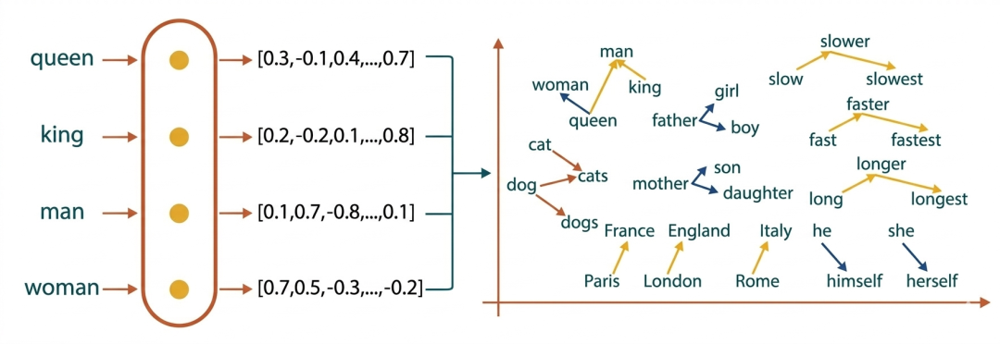
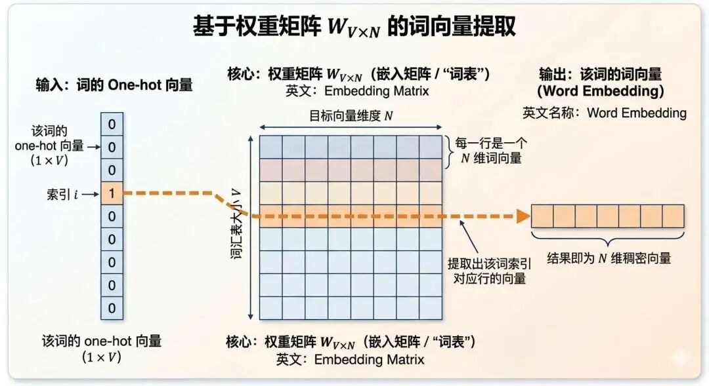
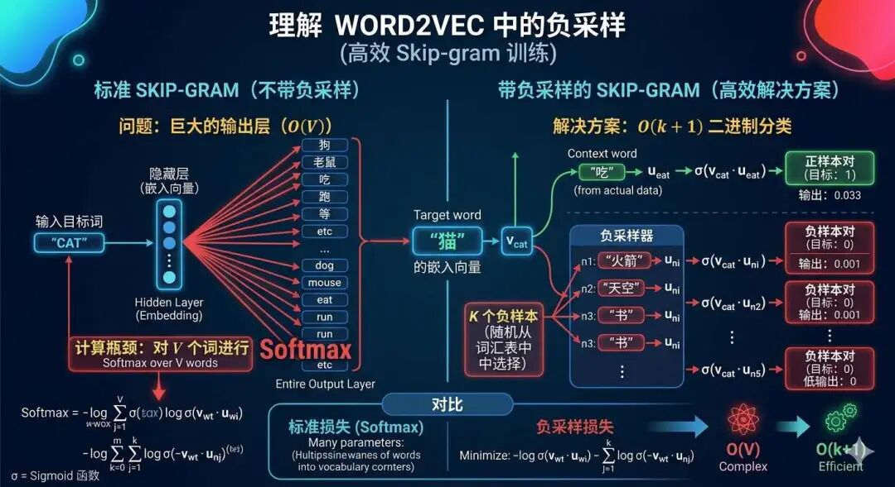
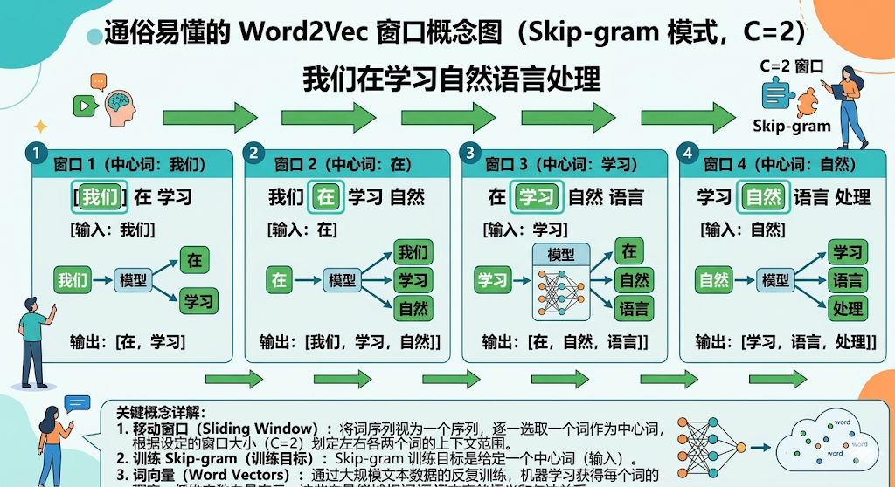
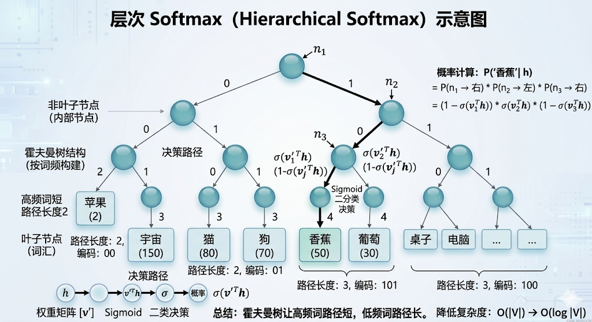
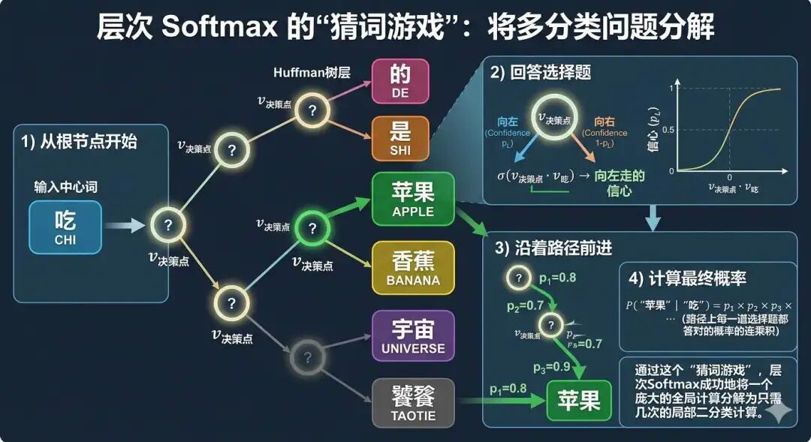

"第一步是要确定：一切皆有可能。那么概率就会发生。"--SpaceX 创始人埃隆马斯克
2013年的一个深夜，Google Brain 实验室的灯光依然亮着。Tomas Mikolov，这位来自捷克、总爱皱眉的研究员，正对着屏幕上一行行代码发呆。他刚刚经历了一次挫败--耗费数月搭建的循环神经网络（RNN）模型，尽管能勉强生成词向量，但训练速度慢如蜗牛，甚至跑完一次实验需要整整一周。
"或许该换个思路了……"Mikolov 揉了揉酸胀的眼睛，想起之前在微软研究语言模型时，那些繁琐的统计方法同样让他头疼。彼时的 NLP 领域，学者们沉迷于用高维稀疏的 one-hot 编码或复杂的矩阵分解（如 LSA）表示词语，但这些方法要么无法捕捉语义，要么计算成本高得离谱。
某天，他在复现 Bengio在2003年推出的神经概率语言模型时，突然意识到--问题可能出在"复杂"本身。Bengio 的模型虽用神经网络学习词向量，但包含多层隐藏结构，导致训练效率低下。"如果把神经网络结构大幅简化，用一层线性映射直接学习词与词之间的关系，会不会既简单又高效？"
这个大胆的想法让他心跳加速。Mikolov 迅速尝试了一种浅层神经网络架构：输入一个词的 one-hot 编码，通过单层线性变换得到稠密向量，再预测上下文词（Skip-Gram）或反之（CBOW）。
结果令人震惊：模型训练时间从数天缩短到几小时，而生成的词向量在语义类比任务中表现远超传统方法！团队戏称这是"减法艺术"--砍掉冗余结构后，效率与效果竟双双提升。
当 Mikolov将成果整理成论文投给 ACL 等顶会时，审稿人的反馈却泼了一盆冷水："词向量并非新概念，Hinton 早在上世纪80年代就提过分布式表示。"但 Mikolov 没有放弃，转而将论文发布在 arXiv 上。短短几周，这篇"被拒稿"的文章引爆了整个 NLP 社区，学者们惊叹："原来词向量可以如此简单而强大！"
注：以上故事为虚构，如有雷同纯属巧合。
在word2vec诞生之前，传统NLP技术一直无法摆脱数据维度爆炸和语义规律无法捕捉的困扰。
word2vec 的出现标志着自然语言处理技术从基于规则和统计学的传统方法向基于分布式和神经网络的方式转变。
在正式学习Word2vec之前，我们先来了解一下传统 nlp 技术为何有局限，才能够充分理解Word2vec的作用。
首先是词义的表示存在稀缺性，传统的NLP将文本转换为机器可处理的数据时，采用的是One-Hot独热编码，每个向量的维度和词汇表的大小是一致的，并且绝大部分的元素值为0，这些0没有任何意义。
这会带来两个问题，首先是维度爆炸，导致计算效率低且十分浪费存储空间；二是无法捕捉复杂的语义关系，比如"汽车"和"车辆"的语义基本一致，但是在向量空间中的各自独立，没有关联性。
另外，传统的NLP技术依赖大量的人工规则，意味着在专业领域研究院和工程师需要具备相应的背景知识，来设计和选择哪些词汇、短语、句法或语法结构作为特征输入模型。
这个繁琐的特征工程不仅耗时费力，对于否定、反讽、指代消解等复杂上下文关系则难以胜任，基于以上原因，Word2vec技术应运而生。
句子和词、词和词一同出现，肯定是有原因的。有关联的事物才会出现在一起，一个词可能具有多种含义，但它的真实含义要由其上下文语境决定，就像"苹果"这个词，如果在其周围分布着"手机""屏幕""操作系统"这样的词，它指的就是苹果公司；如果在其周围分布着"水果""甜""果园"这样的词，它就是个水果。
因此Word2vec技术的一个前提假设是：上下文相似的词，语义也相似，它们的词向量会更加接近。所谓物以类聚，"词"以群分。
基于这个假设，Word2vec通过神经网络学习出低维且稠密的词向量表示，让原本高维稀疏的表达方式变得更加紧凑，同时还能保留丰富的语义信息，缓解了传统NLP技术维度爆炸的问题
传统的词分布编码方法，如 one-hot 编码像是给每个词发一个身份证号，假设"国王"是 [1,0,0,0,...]，王后是 [0,1,0,0,...]，两者毫无关联。这种方式无法表达"国王"和"王后"都是皇室成员，以及性别对立的关系。
而 word2vec 的分布式假设，像是给每个词绘制一种"关系图谱"，通过学习"国王"常和"王室"、"权力"、"男性"一起出现的规律，以及学习"王后"常和"王室"、"权力"、"女性"一起出现的规律从而学习词的真正内涵。
从向量空间的视角来看，因"国王"和"王后"一起共享"王室""权力"等词汇，因此它们的词向量既接近，又存在方向差异（对应性别）。

Word2Vec 的模型结构是其实现语义捕捉的核心，其设计基于浅层神经网络，主要包含 CBOW 和 Skip-Gram 两种架构，这两种架构在结构上非常相似，不同之处在于建模方式：CBOW是根据上下文来预测中心词，而Skip-Gram则是根据中心词去预测周围的上下文。
Word2vec模型结构与一般的神经网络模型结构类似，分为输入层、隐藏层、输出层。
输入层的功能是负责接收 one-hot 编码的词向量，维度等于词汇表大小。
比如词汇表里面只有三个词汇： ["猫", "狗", "苹果"]，则 "猫" 的 one-hot 编码为 [1, 0, 0]。
隐藏层的作用是将 one-hot 向量映射为低维稠密向量，这一层是全连接层，无激活函数，仅通过线性变换实现。
这一层的核心是权重矩阵 $Wv×n$ ，其中 $V$ 为词汇表大小， $N$ 为目标向量维度。这个矩阵也称之为嵌入矩阵（Embedding Matrix），可以理解为一个"词向量查找表"，每个词都能在这里找到属于自己的向量表示。
它的主要目的是要将一个词的词向量从嵌入矩阵中提取出来：输入该词的one-hot向量，然后与嵌入矩阵 $W$ 相乘，然后提取出该词索引对应行的向量，这个结果就是该词的词向量，英文名称之为 $Word Embedding$。

输出层的功能是预测目标词的概率分布，主要是根据预测上下文词或中心词，如通过"猫 吃"预测"鱼"，或是通过"鱼"预测"猫 吃"。
隐藏层的词向量乘以输出层的权重矩阵，得到一个分数向量，随后传统的做法是使用Softmax函数将这个分数向量归一化为概率分布，但是当词表非常大的时候，Softmax的开销也变得巨大，因此Word2vec引入了两个关键性技术：负采样和层次Softmax。
传统的softmax函数用于多类别分类，它将一个向量转化为概率分布，其中每个类别的概率由该类别得分与所有类别得分的比较决定。具体来说，对于给定的输入，模型会为每个类别计算一个得分，然后通过softmax函数将这些得分转化为概率：每个类别的概率等于该类别得分的指数除以所有类别得分的指数之和。

因为softmax要确保所有类别的概率之和为1，所以必须计算所有类别的得分，然后进行归一化。这就意味着，即使我们只关心一个类别的概率，也不得不计算所有类别的得分，计算量超大。
举个例子：假设我们有一个词汇表大小为10,000，我们要预测一个中心词（如Skip-Gram或CBOW模型）。
什么是中心词？
简单来说，当用一个窗口在句子上滑动时，处于窗口正中间的那个词就是中心词，而它周围的词被称为背景词（Context Words）。

对于每个训练样本，模型会输出一个10,000维的向量，每个维度对应一个词的得分。然后，softmax函数需要计算10,000个得分的指数，然后求和，再用每个指数除以总和。
这个过程需要计算10,000次指数和一次求和，然后10,000次除法。这样，每个训练样本都要进行大约20,000次操作（以浮点运算计）。当词汇表很大时，这个计算量是巨大的。
负采样通过将多分类问题转化为二分类问题来避免这种计算。对于每个正样本（中心词和上下文词），我们只更新正样本和少量负样本（如5个）的权重，而不是更新整个词汇表的权重。
这样，每次训练只需要计算6个（1个正样本+5个负样本）类别的得分，从而大大减少了计算量。
因此，传统softmax每个都比对一遍是因为归一化的需要，而负采样通过近似方法避免了全局归一化。
什么是负采样，说白了就是训练的时候，明确否定少量的样本，强化正确的样本。
举个例子：直接告诉模型"苹果"是水果，然后挑几个错的，告诉模型"苹果"不是汽车、不是手机、不是鞋子。
不用让模型训练时让从几万个词里找出"苹果"是水果，而是只要学会"苹果是水果，但不是汽车/手机/鞋子"就好了，这样做的好处是不用每次检查所有词，计算量骤减，比如从10万词降到只对比5个错的。
即通过学习"苹果更可能和哪些词一起出现"，并用少量对比词来辅助训练，从而大幅减少计算量。在这个过程中，还需要按照一定的概率从词表中挑选这些"对比词"，常见的做法如下：
$$ P(w_i) = \frac{f(w_i)^{3/4}}{\sum_{j=0}^{n}(f(w_j)^{3/4})} $$注释版：
$$ \underbrace{P(w_i)}_{\text{单词}w_i\text{的采样概率}} = \frac{\underbrace{f(w_i)^{3/4}}_{\text{单词频率的3/4次幂（平滑低频词）}}}{\underbrace{\sum_{j=0}^{n} f(w_j)^{3/4}}_{\text{所有单词频率3/4次幂的总和（归一化项）}}} $$每个词 $w_i$ 被采样的概率 $P(w_i)$ 由其词频 $f(w_i)$ 决定，并经过平滑处理。其中，3/4次幂是一个经验性的平滑技巧。
它既保证了高频词被采样的概率更大，又防止了低频词被完全忽略，同时避免了极高频词（如"的"）占据绝大多数采样机会。
层次Softmax对于计算量大的解决思路也是将多分类问题转变为二分类问题，只不过层次Softmax借用了霍夫曼树结构。
霍夫曼树结构是一颗分叉的"二叉树结构"，既然是树就会有叶子节点和非叶子节点，其中每个叶子节点代表词汇表里的一个词，比如"苹果"、"香蕉"、"宇宙"等等。

非叶子节点不直接代表某个具体的词，而是代表一道道选择题的决策点。每个决策点都有自己的一个参数向量
这棵树通常会根据词频来构建，高频词（如"的"、"是"）离根节点近，路径短；低频词（如"饕餮"）离根节点远，路径长。这样，常用的词能更快被找到。
现在，假设我们的任务是预测中心词"吃"的上下文词，而答案应该是"苹果"。在层次Softmax中，我们不是直接计算"苹果"的概率，而是玩一个"根据线索词'吃'，从树根走到目标词'苹果'"的游戏。
1）从根节点开始，我们站在树的根节点。线索是中心词的向量（比如"吃"的词向量）。
2）回答选择题：在当前的决策点（比如根节点），我们需要回答一个问题："下一步应该往左走还是往右走？" 决策的依据是计算一个概率：
$$ \sigma(\mathbf{v}_{决策点} \cdot \mathbf{v}_{吃}) $$这里σ是Sigmoid函数，输出一个0到1之间的值，可以理解为"向左走的信心"。
3）沿着路径前进：根据计算出的概率方向（比如在根节点我们判断应该向左走），我们移动到下一个节点。然后在这个新节点上，重复第2步，回答下一道选择题，直到走到代表"苹果"的那个叶子节点为止。
4）计算最终概率："苹果"是正确答案的概率，就等于从根节点到"苹果"的这条路径上，每一道选择题都答对的概率的连乘积。
通过这个"猜词游戏"，层次Softmax成功地将一个庞大的全局计算（计算所有几万甚至几十万个词的概率）分解为只需几次的局部二分类计算（一条路径上通常只有几次Logistic回归）。

在Word2vec出现之前，人们一直在试图用"更复杂的模型"去理解语言，但Mikolov给出的答案却恰恰相反：把问题简化到刚刚好，让模型专注于"词和词之间的关系"本身。
它没有试图一次性解决所有问题，而是抓住了一个最核心的信号--共现关系。通过让模型在海量文本中反复学习"哪些词经常一起出现"，最终在一个低维空间中，把语义结构一点点"压缩"出来。
从one-hot到词向量，这一步看似只是表示方式的变化，实际上却是一次认知方式的转变： 机器不再依赖人为设计规则，而是开始从数据中"自己总结规律"。而这，也正是后来一切深度学习方法的起点--不是我们告诉模型世界是什么样，而是让模型自己去发现世界的结构。
分布式表示（Distributed Representation）：一种用低维稠密向量来表示词语的方式。每个词不再是一个孤立的ID（如one-hot），而是由一组连续数值共同编码，这些数值会隐式表达语义特征（如"性别""类别""语义相似性"等）。不同词之间可以通过向量距离或方向关系来体现相似性。
词向量（Word Embedding）：将离散的词映射到连续向量空间中的表示方式。Word2vec学习到的词向量，本质上是通过上下文共现关系训练得到的，使得语义相近的词在向量空间中彼此接近。
分布式假设（Distributional Hypothesis）：语言学中的一个核心思想：一个词的含义可以由它的上下文决定（"You shall know a word by the company it keeps"）。Word2vec正是基于这一假设，通过学习词的共现模式来建模语义关系。
CBOW（Continuous Bag of Words）：一种Word2vec模型结构，通过"上下文预测中心词"。输入是窗口内的多个上下文词（通常取平均或求和），输出是目标中心词。它更适合处理高频词，训练速度较快。
Skip-Gram：另一种Word2vec模型结构，与CBOW相反，是"用中心词预测上下文词"。它会针对每一个上下文词分别进行预测，更适合学习低频词的表示，但训练开销相对更大。
嵌入矩阵（Embedding Matrix）：一个形状为V×N是向量维度。其中 𝑉 是词表大小，𝑁 是向量维度。每一行对应一个词的向量表示，模型训练的目标之一就是学习这个矩阵中的数值。
负采样（Negative Sampling）：一种训练优化方法，用少量"错误样本"来替代完整的 Softmax 计算。对于每个真实的词对（正样本），只额外采样少量不相关的词作为负样本，通过对比学习让模型区分"合理共现"和"不合理共现"，从而大幅降低计算成本。
层次Softmax（Hierarchical Softmax）：另一种优化方法，通过构建一棵二叉树（通常是霍夫曼树）来表示词表。每个词对应树上的一条路径，预测一个词的概率转化为沿路径的一系列二分类决策，从而将原本O(V) 的计算复杂度降低为 O(logV)。
霍夫曼树（Huffman Tree）：一种基于词频构建的二叉树结构，高频词路径更短，低频词路径更长。在层次Softmax中用于减少平均计算路径长度，提高训练效率。